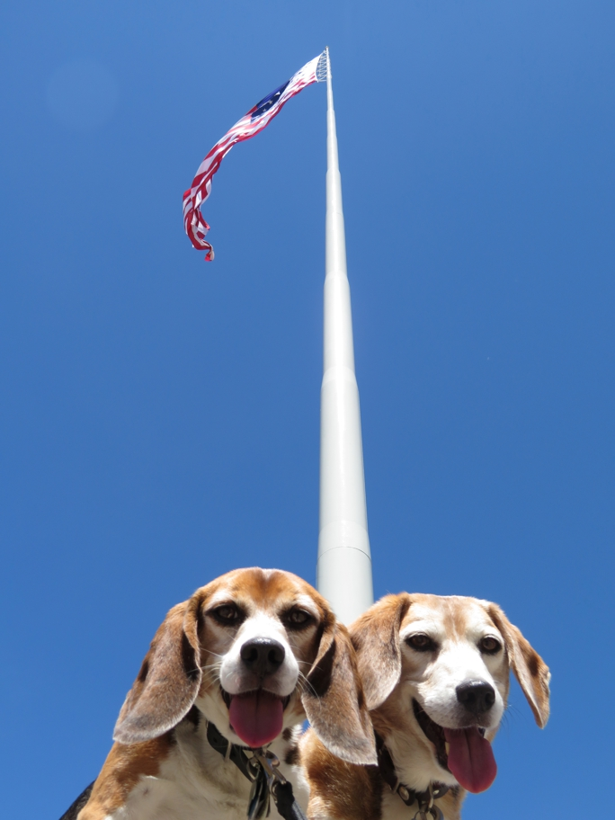

When built in 1996 this was claimed to be America's tallest flagpole. Rankings have changed over the years as exceptionally tall flagpoles were built and fell down. Dorris's flagpole is currently the country's second tallest.
There is also a wall sculpture nearby similar to the one in Weed. We really should have taken a picture.
California Dorris Huxley Beagle Wallace Beagle